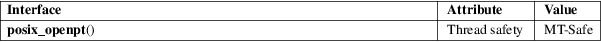

posix_openpt − open a pseudoterminal device
Standard C library (libc, −lc)
#include
<stdlib.h>
#include <fcntl.h>
int posix_openpt(int flags);
Feature Test Macro Requirements for glibc (see feature_test_macros(7)):
posix_openpt():
_XOPEN_SOURCE >= 600
The posix_openpt() function opens an unused pseudoterminal master device, returning a file descriptor that can be used to refer to that device.
The flags argument is a bit mask that ORs together zero or more of the following flags:
|
O_RDWR |
Open the device for both reading and writing. It is usual to specify this flag. |
O_NOCTTY
Do not make this device the controlling terminal for the process.
On success, posix_openpt() returns a file descriptor (a nonnegative integer) which is the lowest numbered unused file descriptor. On failure, −1 is returned, and errno is set to indicate the error.
See open(2).
For an explanation of the terms used in this section, see attributes(7).

POSIX.1-2008.
glibc 2.2.1. POSIX.1-2001.
It is part of the UNIX 98 pseudoterminal support (see pts(4)).
Some older UNIX implementations that support System V (aka UNIX 98) pseudoterminals don’t have this function, but it can be easily implemented by opening the pseudoterminal multiplexor device:
int
posix_openpt(int flags)
{
return open("/dev/ptmx", flags);
}
Calling posix_openpt() creates a pathname for the corresponding pseudoterminal slave device. The pathname of the slave device can be obtained using ptsname(3). The slave device pathname exists only as long as the master device is open.
open(2), getpt(3), grantpt(3), ptsname(3), unlockpt(3), pts(4), pty(7)